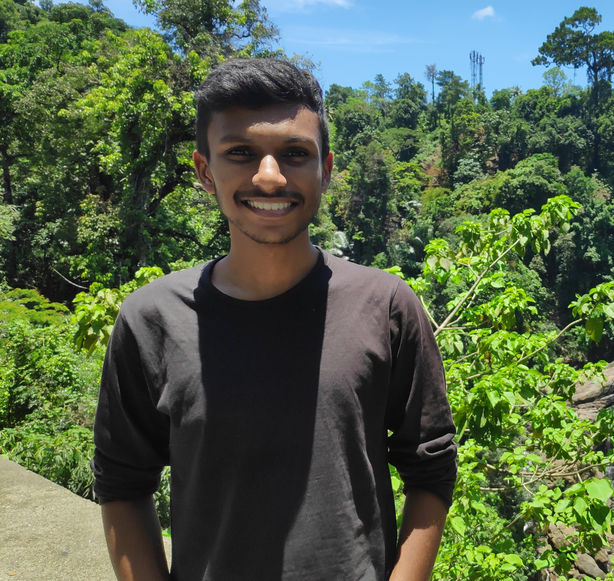
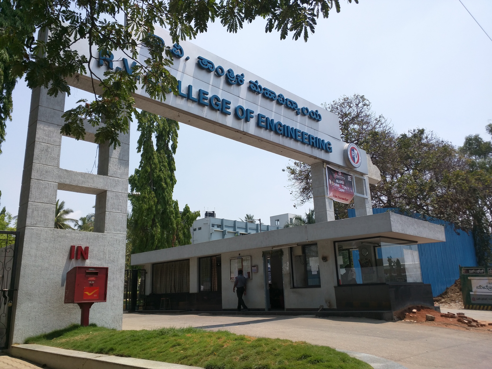
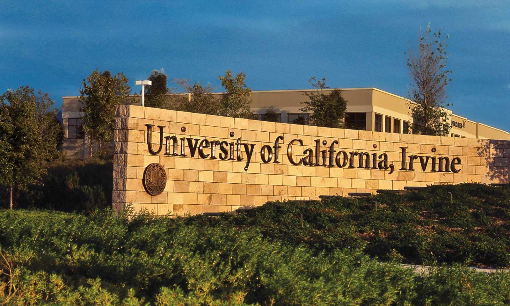

Karthik Cottur

Hello there! I am Karthik Cottur, an enthusiastic Computer Science Engineer who loves solving problems primarily using software and some hardware
Checkout:


R.V. College of Engineering
(August 2016 - September 2020)

I did my Bachelor of Engineering in Computer Science at R.V. College of Engineering, Bengaluru, India. I have mostly worked on projects related to Internet of Things, Machine Learning and Deep Learning during my time in college. Apart from this I participated in a few hackathons, volunteered for the National Service Scheme, played football, and well...had a lot of fun!
Website: rvce.edu.in
Fivetran
(January 2020 - June 2023)
After my graduation from R.V. College of Engineering, I worked in a startup called Fivetran where we built data pipelines. We fetch data from source such as Twitter API and S3 files, process and clean this data, and flush it to a warehouse such as Snowflake or Redshift. I learnt a lot about how the modern data stack works, and the technologies such as Kubernetes and Docker which we can leverage to build these data pipelines
Website: fivetran.com
University of California
(Starting September 2023)

After spending the last three years with Fivetran, I felt it was time to take the next step in my career with a master's degree. I ended up joining University of California, Irvine as a graduate student to obtain a Master's degree in Computer Science. My main focus is on subjects like Operating Systems, Databases and other systems-related courses
Website: uci.edu